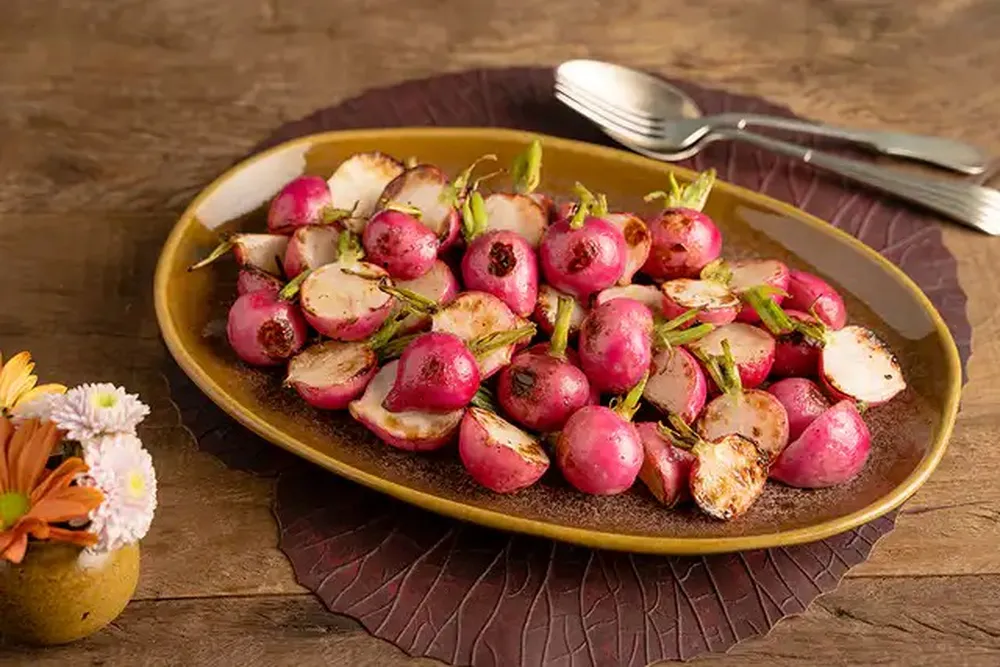

Rabanete Grelhado
INGREDIENTES
- 1 maço de rabanete (cerca de 15 unidades)
- 2 colheres de chá de azeite
- Sal a gosto
- Pimenta-do-reino moída na hora a gosto
MODO DE PREPARO
- Mantenha um pedaço do cabinho e lave os rabanetes com uma escovinha para legumes sob água corrente. Seque os rabanetes com um pano de prato - quanto mais sequinhos estiverem, melhor para grelhar, pois o azeite não vai espirrar na frigideira.
- Corte os rabanetes ao meio; se estiverem muito grandes, corte em quartos.
- Leve uma frigideira grande, de preferência antiaderente, ao fogo médio. Quando aquecer, regue com 1 colher de chá de azeite e coloque metade dos rabanetes para grelhar, com a parte cortada para baixo, um ao lado do outro, sem amontoar. Deixe dourar por cerca de 2 minutos e vire com uma pinça para dourar o outro lado por igual.
- Transfira os rabanetes dourados para um prato e tempere com sal e pimenta a gosto. Repita o processo com a outra metade, regando a frigideira com o restante do azeite. Sirva a seguir.
Filé de frango marinado com laranja e alecrim
INGREDIENTES
- 2 filés de peito de frango
- 1 xícara de chá de caldo de laranja coado
- 2 colheres de sopa de azeite
- 1 dente de alho
- 2 colheres de chá de amido de milho
- 1 ramo de alecrim fresco
- Sal a gosto
- Pimenta-do-reino moída na hora
MODO DE PREPARO
- Com a lateral da lâmina da faca, amasse o dente de alho e descasque.
- Em uma tigela, coloque o alho, o alecrim, o caldo de laranja, 1 colher de sopa de azeite e misture. Mergulhe os filés de frango, tampe e deixe marinar por 20 minutos em temperatura ambiente.
- Passado o tempo da marinada, com uma pinça, transfira os filés de frango para um prato - deixe escorrer bem o líquido da marinada e seque os filés com papel-toalha.
- Leve uma frigideira grande ao fogo médio. Quando aquecer, regue com 1 colher de sopa de azeite. Tempere os filés de frango com sal e coloque um ao lado do outro na frigideira, com a parte de cima (a mais lisinha) em contato com o fundo.
- Deixe dourar por 2 minutos de cada lado e abaixe o fogo - esse processo vai selar a carne e manter o filé suculento.
- Abaixe o fogo e deixe o filé de frango terminar de cozinhar por mais 3 minutos de cada lado. Atenção: o tempo pode variar dependendo do tamanho e da espessura do filé, e o fogo tem que estar baixo mesmo, do contrário a carne queima por fora e fica crua por dentro.
- Enquanto isso, dissolva o amido de milho no líquido da marinada e tempere com uma pitada de sal e uma de pimenta - esse l´quido vai virar o molho do filé de frango.
- Transfira os filés dourados para um prato e mantenha a frigideira em fogo baixo. Regue com o líquido da marinada de uma só vez (com o alho e o alecrim) e, com uma espátula de silicone, raspe bem o fundo da frigideira para dissolver os queimadinhos - eles dão mais sabor ao molho.
- Continue mexendo em fogo baixo por cerca de 3 minutos, até formar um molho levemente espesso.
- Transfira o molho para uma tigela (ou molheira) passando por uma peneira. Sirva os filés de frango com o molho.
Pudim de leite com furinhos
INGREDIENTES (CALDA)
- 1 xícara de chá de açúcar
- Um terço de xícara de chá de água fervente
INGREDIENTES (PUDIM)
- 1 lata de leite condensado
- 4 ovos
- 2 e meia xícaras de chá de leite
MODO DE PREPARO
- Separe uma forma redonda de 22 centímetros de diâmetro com furo no meio. Leve uma chaleira com 3 xícaras de chá de água ao fogo médio - ela vai ser usada para fazer a calda e assar o pudim em banho-maria.
- Em uma panela média de borda alta, leve o açúcar ao fogo baixo para derreter, mexendo com uma espátula de silicone, até formar um caramelo dourado.
- Meça um terço de xícara de chá da água fervente e, com cuidado, regue o caramelo. Atenção: a calda vai borbulhar. Misture com a espátula até ficar lisa.
- Transfira a calda para a forma, vertendo sobre o cone central.
- Com um pano de prato ou uma luva térmica, segure e gire a forma para caramelizar também a lateral. Reserve.